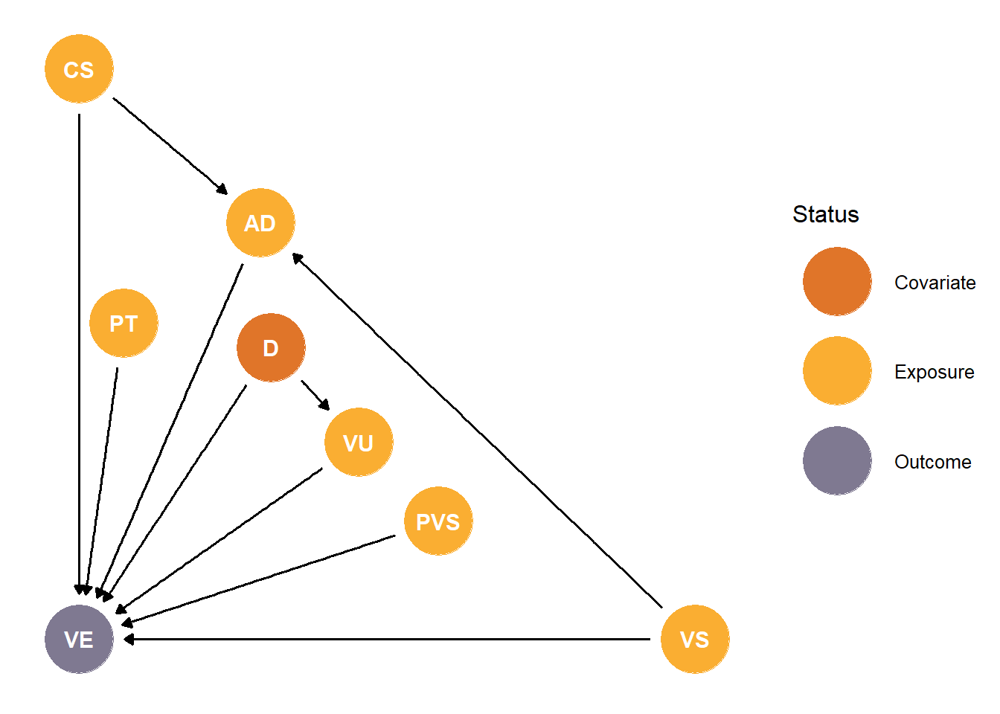
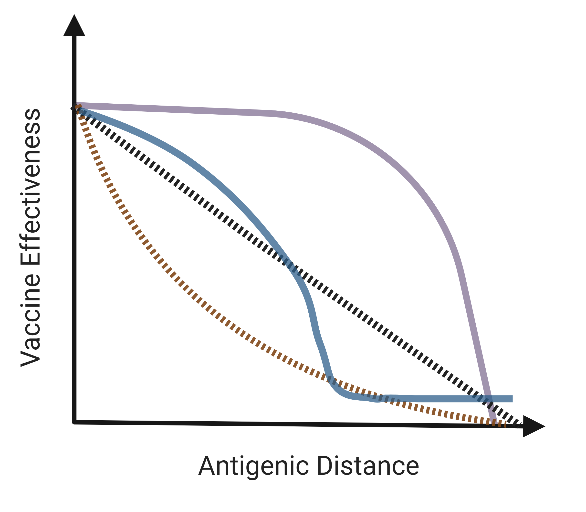

We will collect and combine data from previously published articles and reports for this aim.
Preliminary results
We have created a simple DAG (Figure 1) describing what we believe are the most important variables on the causal pathway between vaccine/circulating strain antigenic distance (AD) and vaccine effectiveness (VE). In this framework, we believe that the circulating strain (CS) and vaccine strain (VS) will each have direct effects on population VE, as well as leading to the antigenic distance result. We also assume that pre-season immunity (PT), as indicated by HAI titer, will impact VE, although we will not have this information as part of our data set. The vaccine strain in the previous season’s vaccine (PVS) may also impact VE, as described in the antigenic distance hypothesis (Skowronski et al. 2017). Vaccine uptake (VU) may also impact VE through changes in direct and indirect vaccination effects (Eichner et al. 2017). Demographic factors (D) such as age, race, etc. influence VE both directly and indirectly through (VU). We plan to collect data on CS, VS, PVS, and VE in all cases, and will also collect and examine impacts of VU and D as data are available. AD will be calculated using VS and CS.
Proposed studies
We will calculate VE using multiple methods, including p_epitope distance (Gupta, Earl, and Deem 2006; pan2011?; Pan and Deem 2016), Grantham distance (Grantham 1974), and temporal distance (Auladell et al. 2022; Boyoglu-Barnum et al. 2021-03-24, 2021-03; Hinojosa et al. 2020-10-22, 2020-10; Li et al. 2021-02-23, 2021-02; Yang et al. 2020; Carlock and Ross 2023). We will then use Bayesian mixed-effects meta-regression (Equation 1 and Table 1) to examine the effect of our predictors (Table 2) on the VE outcome.
\[ \begin{aligned} \hat\theta_k &\sim \mathcal{N}(\theta_k,\sigma^2_k)\\ \theta_k &\sim \mathcal{N}(\mu_k, \tau^2), \quad \mu_k = \beta_0 + \sum_{j=1}^p\beta_jx_{j,k} + b^{(s)}_{s[k]} + b^{(x_1t)}_{t[k]} \cdot x_{1,k} \\ \tau^2 &\sim \text{Student's} \space t^+(3,0,1)\\ \begin{bmatrix} b_s^{(s)} \\ b_s^{(x_1s)}\\ \end{bmatrix} &\sim \text{MVN}(\vec0, \Sigma)\\ \Sigma_s &= (\text{diag}(\sigma_s)\text{L}_s) \times(\text{diag}(\sigma_s)\text{L}_s)^\text{T}\\ \beta_j &\sim \mathcal{N}(0, \sigma^2_j)\\ \sigma^2_{(\cdot)} &\sim \text{Student's} \space t^+(3,0,1)\\ \text{L}_t &\sim \text{LJT}(2)\\ \end{aligned} \tag{1}\]
| Term | Interpretation |
|---|---|
| \(\hat\theta_k\) | Observed estimate from study \(k\) |
| \(\theta_k\) | True underlying effect for study \(k\) |
| \(\sigma^2_k\) | Known sampling variance for \(\hat\theta_k\) |
| \(\beta_0\) | Fixed intercept |
| \(\beta_j\) | Fixed slopes for predictors \(x_j, j \ge 1\) as described in Table 2 |
| \(\sigma^2_j\) | Prior variance for fixed effect \(\beta_j\) |
| \(\tau^2\) | Between-study variance for true effects \(\theta_k\) |
| \(\Sigma\) | Covariance matrix governing the joint variability and correlation of subtype-varying random effects |
| \(\begin{bmatrix} b_s^{(s)} \newline b_s^{(x_1s)} \end{bmatrix}\) | Jointly modeled random intercept (\(b_s^{(s)}\)) and random slope for \(x_1\) (\(b_s^{(x_1s)}\)), varying by influenza subtype \(s\) |
| \(b^{(s)}_{s[k]}\) | Random intercept/effect for influenza subtype/lineage \(s\) for study \(k\) |
| \(b^{(x_1s)}_{s[k]} \cdot x_{1,k}\) | Random slope for antigenic distance \(x_1\), varying by subtype \(s\) for study \(k\) |
| \(\sigma^2_{(\cdot)}\) | Prior variance terms for hierarchical parameters, all governed by a half-Student’s \(t\) distribution |
| L\(_t\) | Cholesky factor of a correlation matrix for time-varying random effects, with a Lewandowski–Kurowicka–Joe (LKJ) prior |
| Predictor | Interpretation |
|---|---|
| \(d\) | Antigenic distance between vaccine and circulating strain |
| \(t\) | Season |
| \(a\) | Age group |
| \(p_s\) | Proportion of infections caused by subtype/lineage \(s\) |
| \(r\) | Number of consecutive years relevant vaccine strain has been included in vaccine as of season \(t\) |
| \(c\) | Antigenic distance between this season’s and last season’s relevant vaccine strain |
Expected outcomes

References
Auladell, Maria, Hoang Vu Mai Phuong, Le Thi Quynh Mai, Yeu-Yang Tseng, Louise Carolan, Sam Wilks, Pham Quang Thai, et al. 2022. “Influenza Virus Infection History Shapes Antibody Responses to Influenza Vaccination.” Nat Med 28 (2): 363–72. https://doi.org/10.1038/s41591-022-01690-w.
Boyoglu-Barnum, Seyhan, Daniel Ellis, Rebecca A. Gillespie, Geoffrey B. Hutchinson, Young-Jun Park, Syed M. Moin, Oliver J. Acton, et al. 2021-03-24, 2021-03. “Quadrivalent Influenza Nanoparticle Vaccines Induce Broad Protection.” Nature 592 (7855): 623–28. https://doi.org/10.1038/s41586-021-03365-x.
Carlock, Michael A., and Ted M. Ross. 2023. “A Computationally Optimized Broadly Reactive Hemagglutinin Vaccine Elicits Neutralizing Antibodies Against Influenza B Viruses from Both Lineages.” Sci Rep 13 (September): 15911. https://doi.org/10.1038/s41598-023-43003-2.
Eichner, Martin, Markus Schwehm, Linda Eichner, and Laetitia Gerlier. 2017. “Direct and Indirect Effects of Influenza Vaccination.” BMC Infectious Diseases 17 (1): 308. https://doi.org/10.1186/s12879-017-2399-4.
Grantham, R. 1974. “Amino Acid Difference Formula to Help Explain Protein Evolution.” Science 185 (4154): 862–64. https://doi.org/10.1126/science.185.4154.862.
Gupta, Vishal, David J. Earl, and Michael W. Deem. 2006. “Quantifying Influenza Vaccine Efficacy and Antigenic Distance.” Vaccine, 3rd International Conference on Vaccines for Enteric Diseases, 24 (18): 3881–88. https://doi.org/10.1016/j.vaccine.2006.01.010.
Hinojosa, Michael, Samuel S Shepard, Jessie R Chung, Jennifer P King, Huong Q McLean, Brendan Flannery, Edward A Belongia, and Min Z Levine. 2020-10-22, 2020-10. “Impact of Immune Priming, Vaccination, and Infection on Influenza A(H3N2) Antibody Landscapes in Children.” The Journal of Infectious Diseases, 2020-10-22, 2020-10. https://doi.org/10.1093/infdis/jiaa665.
Li, Zhu-Nan, Feng Liu, F. Liaini Gross, Lindsay Kim, Jill Ferdinands, Paul Carney, Jessie Chang, James Stevens, Terrence Tumpey, and Min Z. Levine. 2021-02-23, 2021-02. “Antibody Landscape Analysis Following Influenza Vaccination and Natural Infection in Humans with a High-Throughput Multiplex Influenza Antibody Detection Assay.” Edited by Kanta Subbarao. mBio 12 (1). https://doi.org/10.1128/mbio.02808-20.
Pan, Yidan, and Michael W. Deem. 2016. “Prediction of Influenza B Vaccine Effectiveness from Sequence Data.” Vaccine 34 (38): 4610–17. https://doi.org/10.1016/j.vaccine.2016.07.015.
Skowronski, Danuta M., Catharine Chambers, Gaston De Serres, Suzana Sabaiduc, Anne-Luise Winter, James A. Dickinson, Jonathan B. Gubbay, et al. 2017. “Serial Vaccination and the Antigenic Distance Hypothesis: Effects on Influenza Vaccine Effectiveness During A(H3N2) Epidemics in Canada, 2010–2011 to 2014–2015.” J Infect Dis 215 (7): 1059–99. https://doi.org/10.1093/infdis/jix074.
Yang, Bingyi, Justin Lessler, Huachen Zhu, Chao Qiang Jiang, Jonathan M. Read, James A. Hay, Kin On Kwok, et al. 2020. “Life Course Exposures Continually Shape Antibody Profiles and Risk of Seroconversion to Influenza.” PLOS Pathogens 16 (7): e1008635. https://doi.org/10.1371/journal.ppat.1008635.